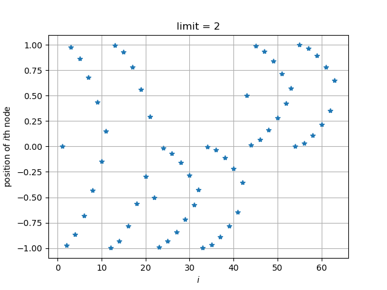
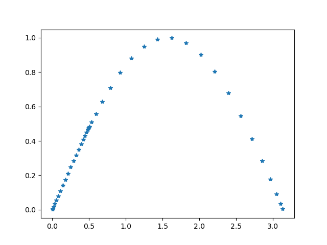

探究 scipy.integrate.quad 取点的方式
import numpy as np
from scipy import integrate
import matplotlib.pyplot as plt
nodes = []
def foo(x):
nodes.append(x)
return np.exp(x) + np.sin(10*x)**2 + np.exp(x)**100
result = integrate.quad(foo, -1, 1, epsrel=1e-125, limit=2, full_output=1)
n = np.linspace(1, len(nodes), len(nodes))
print(len(nodes))
print(len(nodes)/21)
print(result[2]['neval'])
plt.plot(n, nodes, '*')
plt.grid()
plt.title('limit = 2')
plt.xlabel(r"$i$")
plt.ylabel("position of $i$th node")
plt.savefig('fig.png')
记录所计算的值
利用列表的性质，实现记录积分的过程中所计算的函数值。
import matplotlib.pyplot as plt
import numpy as np
from scipy.integrate import quad
def quad_recorded(func, *args, **kwargs):
"""
use scipy.integrate.quad, but return the results with additional
information "nc" and "vc".
Returns:
inte_res: the return of scipy.integrate.quad
nc: the points calculated
vc: the calculated functiona values
"""
def func_recorded(x, node_container, value_container):
res = func(x)
node_container.append(x)
value_container.append(res)
return res
nc = []
vc = []
inte_res = quad(lambda x: func_recorded(x, node_container=nc,
value_container=vc),
*args, **kwargs)
idx = np.argsort(np.array(nc))
nc = np.array(nc)[idx].tolist()
vc = np.array(vc)[idx].tolist()
return inte_res, nc, vc
res, nc, vc = quad_recorded(np.sin, 0, np.pi, points=[.5])
plt.plot(nc, vc, '*')
print(res)
plt.savefig('quad_recorded.png', transparent=True)>>> (1.9999999999999998, 2.2204460492503128e-14)
可以看出，正如所预期的，在 $0.5$ 处切开了。此函数可以用于保存计算较慢的积分，查 看被积函数是否光滑，是否真的收敛。